Capture rogue programs, put them to work in your base, and explore the Stack.
A single-player cyberpunk game set inside a computer network called the Grid. You fight wild programs, capture the ones you beat, and use them as a party, as base staff, or as raw materials. Your base produces while you're away, your staff have moods and relationships, and the towns on the map react to how you treat them.
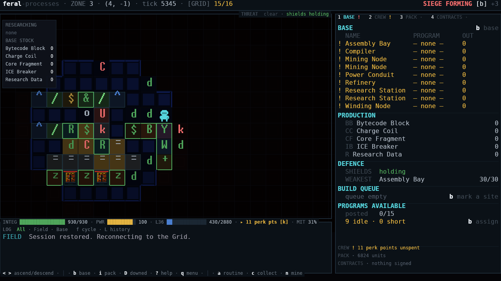
Features
Battles are turn-based, your party against groups of enemies.
Only the groups at the front can attack you. Bring an enemy's health
down and use Decompile on it to capture it. Up to five programs can
fight alongside you, and R skips to the end of a fight.
An optional mode plays fights on a grid map. It adds cover, line of sight, attacks of opportunity, ranged weapons, and weapons that hit everything in an area, including your own side. Five wild programs of the same kind join up into one large squad.
There are eight classes. Each level gives you six points to spend across five attributes. Before you confirm, the points screen shows how the change affects your hit chance and damage. Perks and talent trees come on top of that.
Routines are the game's abilities. You and your programs get more routine slots as you level up, and there are over a hundred routines. Among them: copying yourself, bringing fallen enemies back as allies, teleporting, turning into a species you've studied, and confusing an enemy's AI.
Place machines next to each other and they pass goods along. A row of connected machines is a production line, and it needs one worker. Leave a gap to split a line into two, and each part gets its own worker.
You research one project at a time. Later projects need a captured program held at the Research Station as a test subject, and the subject is used up when the project finishes. Most of the research tree stays hidden until you discover it.
Beaten programs can be taken back to base and broken down at a Teardown Rig. Depending on the tool, you can strip it for components, take its gear, or extract an image that lets you transform into that species later.
Send spare staff out on sorties from the Dispatch Relay. They fight real battles off-screen and bring back loot, and some may not come back. Honeypots trap wild programs for you while you're elsewhere.
You choose when you start a run. On Forgiving, a program that falls in battle is out of action until repaired. On Permadeath, it's gone, and so is your save if you die. Achievements carry over between runs and give bonuses at the start of the next one.
Each of these is a .ron text file in assets/.
Add a new one and it shows up the next time you start the game.
Staff management
Each program you own has a personality and remembers things that happen to it: good fights, bad injuries, being stuck at a machine that never has what it needs. Those memories set its mood. Programs also form opinions of each other. Fighting together makes friends, and a crewmate turning on someone in battle makes enemies.
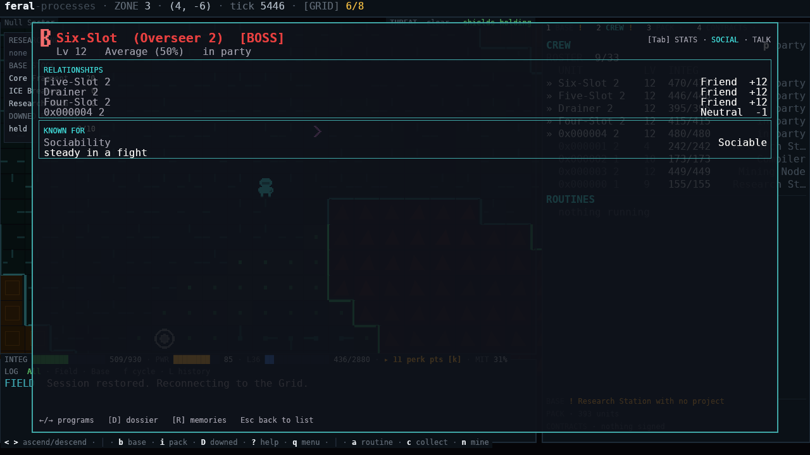
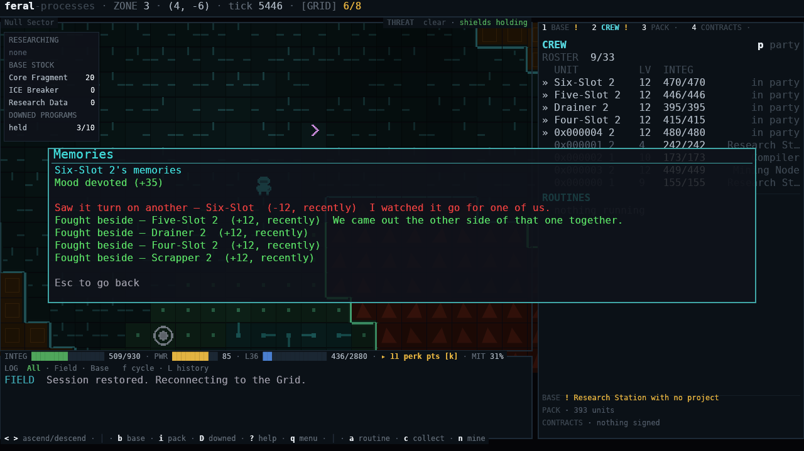
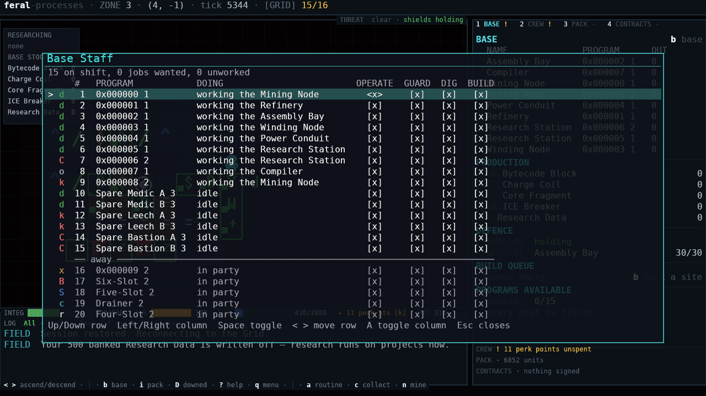
Basebuilding
Dig out space, lay floors and walls, and place machines. Queue up work orders for the materials you need, and keep Depots stocked with anything your production lines can't make. The base keeps working while you're out exploring.
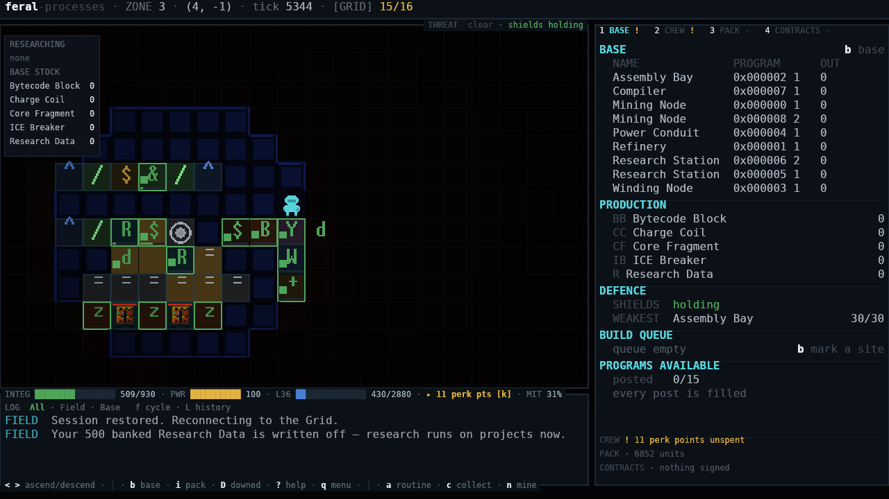
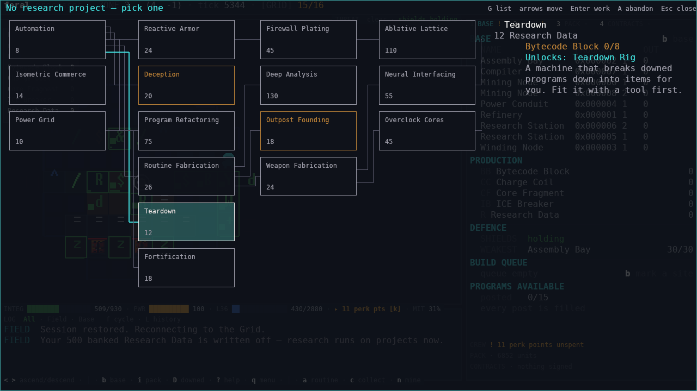
From the second sector on, wild programs attack your base. If you're there, you fight on a battle map of your own base, and your machines can be destroyed. If you're not, the fight is settled without you. Turrets and walls help.
Add or remove affixes on your gear. The Mod Bench has its own research tree, and some affixes give Deflection, a stat you can only get from gear.
Every so often a GC Entropy Sweep hits your base. You get a few minutes' warning first. Sweeps don't happen in the first sector.
Settlements
Towns are scattered across the map, and you find them by exploring. Each one has a shop and a specialty, and its prices depend on its temperament. How a town treats you depends on its opinion of you.
A town's opinion improves when you finish its jobs, clear out nests nearby, or destroy a Stack near it. It gets worse if you take a job and abandon it. There are five levels:
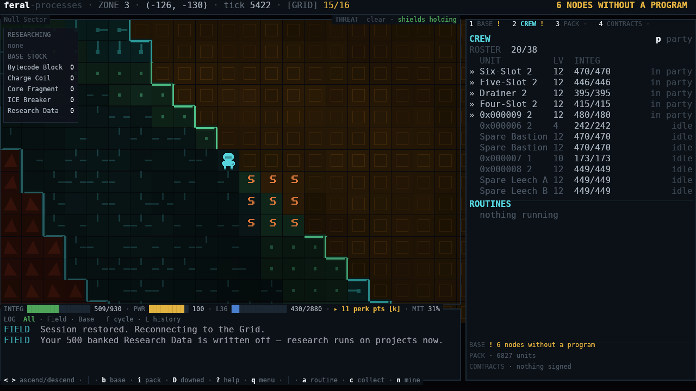
Small towns, called Servers, grow into Mainframe cities over time. Trading with one makes it grow sooner. A city that nobody trades with shrinks again.
Once you've researched Outpost Founding, you can build your own outposts on the map. They grow as you staff them, and they can be raided.
Load goods at the Dispatch Relay and send them to a town or outpost you've found. The route keeps running and bringing back Credits until you cancel it.
Dungeon crawling
Every zone has entrances to the Stack, a randomly generated dungeon played in first person, one square at a time, in the style of old-school dungeon crawlers. You map it as you go. Enemies are tougher down there, and the loot is better.
The map stays the same for the whole run. To move on to a harder zone, you build a portal using fragments that only drop in the Stack. Your base and the towns you've found stay where they are.
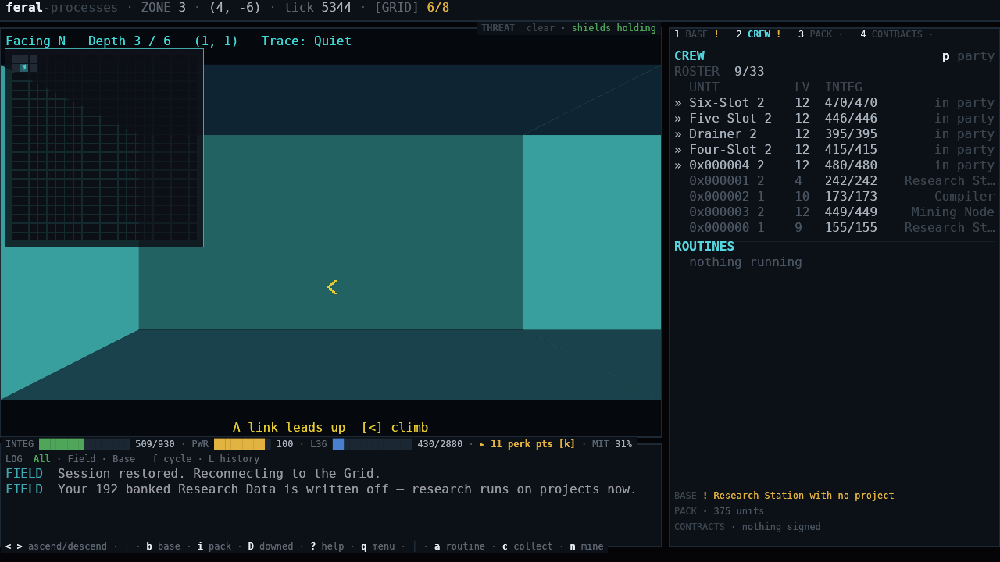
Screenshots
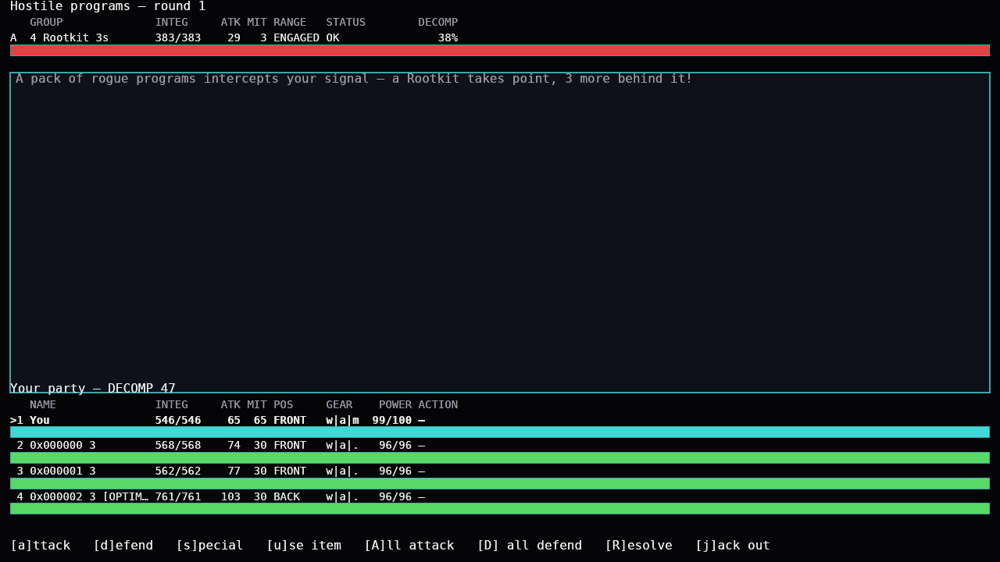
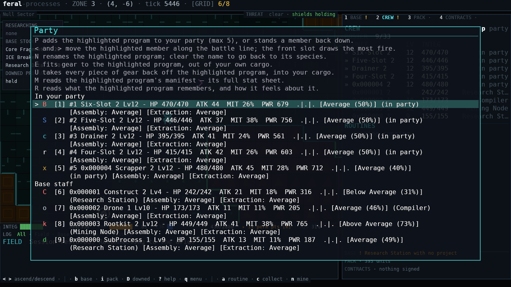
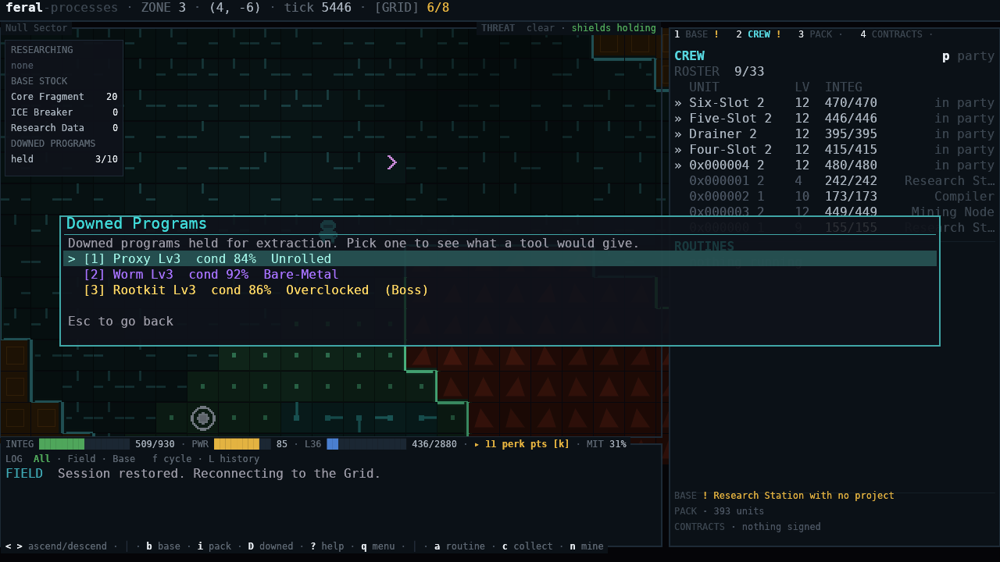
Install
You'll need Rust installed. Clone the repository and start the game
with
cargo run.
The default debug build runs fine.
The game looks for assets/, saves/ and your
profile inside the folder you built it from. Don't move or delete
that folder, even if you use cargo install --path crates/launcher.
# if you don't have Rust yet $ curl --proto '=https' --tlsv1.2 -sSf https://sh.rustup.rs | sh # then $ git clone https://github.com/troglodyte/feral-processes $ cd feral-processes $ cargo run -p feral-processes
? in-game manual 1 2 3 base, crew and inventory panels 4 contracts b base menu (staff, research, work orders) p party menu (roster, routines, perks) D downed programs
Modding
Almost all of the game's content is stored as .ron text
files: species, structures, items, routines, contracts, towns,
classes, research, memories, conversations and more. If a file has a
mistake in it, the game skips it and logs a warning. New fields are
always optional, so older mods keep working.
(
id: "null_pointer",
name: "Null Pointer",
glyph: 'n',
color: Magenta,
base_hp: 96,
base_atk: 18,
habitats: [Backplane, Deadlock],
growth_multiplier: 1.4,
moves: [
(name: "Pointer Stab", power: 8, spread: 3),
],
abilities: [(id: "segfault", level: 6)],
)
To give a species a sprite, put a 16×16 PNG with its name in
assets/sprites/. The game colours it to match the danger
level, the terrain and the damage it's taken. To keep your own colours
instead, name the file <name>.colour.png. You can also
draw sprites in the game with the Sprite Forge.
Balance numbers like XP curves, drop rates and difficulty scaling aren't
in the data files. They're constants in
crates/engine/src/tuning.rs.